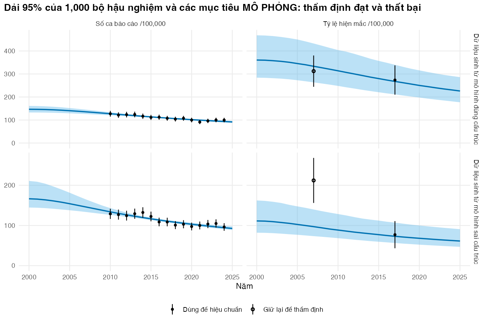
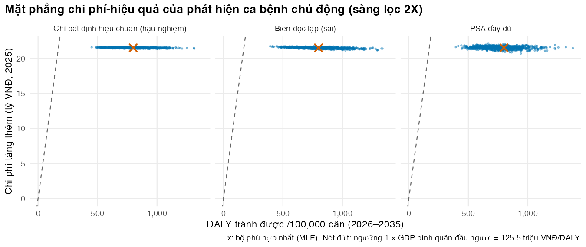

if (!isTRUE(l10n_info()[["UTF-8"]])) invisible(Sys.setlocale("LC_CTYPE", "en_US.UTF-8"))
source("../_shared/R/helpers.R")
source("../_shared/R/vn_data.R")
source("code/model.R")
library(ggplot2)
p <- tb_params() # includes the course threshold (p$wtp, p$wtp_low) and costs in VND 2025
pc <- read_params("params/calibration.csv")
bounds <- prior_bounds(pc)
th_true <- theta_true(pc)
targets <- make_targets(p, pc, seed = 2025) # SIMULATED targets (see Lesson 1)
# Probabilities from a simulation are never exactly 0 or 1: print them as such
fmt_prob <- function(x) ifelse(x >= 0.999, ">99.9%", ifelse(x <= 0.001, "<0.1%", fmt_pct(x, 0)))Bài 4: Đưa kết quả hiệu chuẩn vào PSA, thẩm định và báo cáo
Dùng hậu nghiệm trong đánh giá kinh tế, kiểm tra mô hình bằng dữ liệu giữ lại, và viết phần phương pháp hiệu chuẩn
Vì sao bạn nên quan tâm?
Sở Y tế một tỉnh 1,000,000 dân trình đề xuất: từ năm 2026, mỗi năm sàng lọc 2X cho 25% dân số, trong khi ở Thái Nguyên giai đoạn 2020–2023 con số này chỉ khoảng 0.8% (Dương, Lê, và Phạm 2025). Mỗi người được chụp X-quang ngực (73,300 VNĐ theo giá BHYT) và nếu phim bất thường thì làm Xpert (720,500 VNĐ) (Bộ Y tế 2024). Bình quân khoảng 102,800 VNĐ mỗi người, bằng 2.6 bát phở (Nhadautu.vn 2025), nhưng nhân lên thành 25.7 tỷ VNĐ mỗi năm cho cả tỉnh. Bài này trả lời hai câu hỏi trước khi tỉnh ký: khoản chi đó có đáng không, và câu trả lời chắc đến đâu khi các tham số quan trọng nhất chỉ biết được qua hiệu chuẩn.
Mục tiêu học tập
Sau bài này, bạn có thể:
- Đưa các bộ tham số hậu nghiệm vào phân tích độ nhạy xác suất (PSA) mà vẫn giữ tương quan giữa chúng, và nêu điều kiện để rút độc lập các tham số còn lại.
- Giải thích và đo hệ quả của việc rút độc lập từ phân phối biên của các tham số đã hiệu chuẩn.
- Thực hiện kiểm tra dự báo hậu nghiệm và thẩm định ngoại (external validation) bằng dữ liệu giữ lại, và nhận ra một phép thẩm định thất bại.
- Chỉ ra cách tính không nhận dạng được, và tiên nghiệm, làm thay đổi kết luận kinh tế.
- Viết phần báo cáo hiệu chuẩn theo một bảng kiểm.
Ý chính
- Mỗi bộ hậu nghiệm là một đơn vị: mỗi lần lặp PSA lấy nguyên một hàng \((\beta, \delta, k_\beta)\). Xáo trộn các cột tạo ra những tổ hợp mà dữ liệu đã loại trừ.
- Chỉ rút độc lập những tham số không ảnh hưởng đến mục tiêu hiệu chuẩn. Tham số có ảnh hưởng phải nằm trong hiệu chuẩn.
- Báo cáo tỷ số chi phí-hiệu quả gia tăng (ICER) = chi phí tăng thêm trung bình chia DALY tránh được trung bình, kèm xác suất có chi phí-hiệu quả; không báo cáo phân vị của tỷ số từng lần rút.
- Kiểm tra dự báo hậu nghiệm phải mô phỏng cả sai số quan sát. Khớp mục tiêu hiệu chuẩn là thẩm định yếu, vì mô hình sai cấu trúc vẫn khớp được; dữ liệu giữ lại mạnh hơn.
- Không nhận dạng được, và tiên nghiệm, làm đổi kết luận kinh tế.
- Giá BHYT là giá dịch vụ, không phải chi phí nguồn lực; chọn nguồn chi phí có thể đổi ICER hơn gấp đôi.
- Báo cáo hiệu chuẩn phải đủ để người khác làm lại.
Nội dung
Câu hỏi kinh tế
Bài này đánh giá phát hiện ca bệnh chủ động (active case finding, ACF) theo chiến lược 2X của Chương trình Chống lao Quốc gia: chụp X-quang ngực, ai có phim bất thường thì làm Xpert trên đờm. Kịch bản là một lựa chọn chính sách, không phải số đo: từ năm 2026 đến 2035, mỗi năm sàng lọc 25% dân số, tức mỗi người khoảng 4 năm một lần. Một người mắc lao chưa phát hiện được tìm thấy nếu được sàng lọc và cả hai xét nghiệm đều dương tính, nên ACF cộng thêm vào tỷ suất phát hiện \(\delta\) một lượng
\[ \delta_{\text{ACF}} = \text{độ phủ} \times \text{độ nhạy X-quang} \times \text{độ nhạy Xpert} = 0.25 \times 0.85 \times 0.775 = 0.165 \text{ mỗi năm} \]
(Schwalb và c.s. 2025). Lượng cộng thêm này không phụ thuộc \(\delta\), nhưng lợi ích của nó thì có: \(\delta\) càng thấp thì càng nhiều người bệnh đang chờ được tìm thấy.
Chi phí tính theo quan điểm hệ thống y tế, giá năm 2025. Sàng lọc một người tốn 102,800 VNĐ: giá X-quang cộng 4.1% giá Xpert theo bảng giá BHYT (Bộ Y tế 2024), với tỷ lệ phim bất thường lấy từ điều tra quốc gia 2017–2018 (Nguyen và c.s. 2020). Điều trị một ca lao nhạy cảm thuốc tốn 2.06 triệu VNĐ và chẩn đoán thụ động một ca tốn 6.72 triệu VNĐ: đó là US$81 và US$264 năm 2023 theo số liệu của Chương trình Chống lao Quốc gia (Schwalb và c.s. 2025), quy đổi bằng tỷ giá và chỉ số giá tiêu dùng dùng chung của khóa học (World Bank 2026b, 2026a). Chi phí chẩn đoán thụ động chỉ tính cho ca do hệ thống thường quy tìm ra; ca do sàng lọc tìm thấy đã nằm trong chi phí sàng lọc.
Năm sống điều chỉnh theo bệnh tật (DALY) gồm số năm sống mất do tử vong (YLL) và số năm sống với bệnh tật (YLD). Mỗi ca tử vong mất 29.8 năm, là kỳ vọng sống còn lại ở tuổi 48.3 (tuổi trung bình của người bệnh lao được báo cáo năm 2021) theo bảng sống WHO (World Health Organization 2026b, 2026a), tương đương 19.8 năm sau chiết khấu về thời điểm tử vong. Người chết vì lao có thể lớn tuổi hơn người được báo cáo (module không có số liệu về tuổi lúc tử vong), nên con số này có thể cao. YLD dùng trọng số bệnh tật 0.333 cho lao HIV âm (Tomeny và c.s. 2024). Chiết khấu 3% mỗi năm; ngưỡng cơ sở là 1 × GDP bình quân đầu người, 125.5 triệu VNĐ/DALY, kèm ngưỡng thấp 0.5 × GDP (Cục Thống kê (Bộ Tài chính) 2026; Ong và c.s. 2026; Woods và c.s. 2016). Mọi kết quả tính trên 100,000 dân.
Ba giới hạn cần nói trước. Một là giá BHYT: đó là giá dịch vụ mà quỹ thanh toán, không phải chi phí nguồn lực; chi phí thực của các thử nghiệm sàng lọc cộng đồng ACT3/ACT5 chỉ khoảng US$1.7 mỗi người (Schwalb và c.s. 2025), và phần Thực hành chạy kịch bản này. Hai là mô hình bỏ qua người dương tính giả được điều trị. Ba là ở các giá trị thật, mô hình cho số tử vong do lao năm 2024 gấp 2.6 lần ước tính của WHO (Bài 1), nên phần năm sống mất do tử vong, và do đó DALY tránh được, có thể bị thổi phồng. Một đánh giá đầy đủ cho Việt Nam xem Schwalb và c.s. (2025).
Hậu nghiệm trong PSA
Bước cuối của quy trình bảy bước là đưa kết quả hiệu chuẩn vào phân tích kinh tế (Vanni và c.s. 2011). Hậu nghiệm đã là một ma trận các bộ tham số, nên lần lặp PSA thứ \(i\) dùng hàng thứ \(i\) (Whyte, Walsh, và Chilcott 2011; Menzies và c.s. 2017). Có ba cách thường gặp: chỉ dùng bộ phù hợp nhất (bỏ qua bất định hiệu chuẩn), rút độc lập từ từng phân phối biên (phá tương quan), và dùng nguyên các hàng hậu nghiệm (cách đúng).
Các tham số không hiệu chuẩn được rút như ở M03 rồi ghép vào từng hàng. Cách ghép độc lập này chỉ hợp lệ khi chúng không ảnh hưởng đến mục tiêu hiệu chuẩn. Ở đây chi phí và trọng số bệnh tật chỉ xuất hiện trong phần kinh tế, còn độ nhạy xét nghiệm chỉ tác động qua ACF, bắt đầu từ năm 2026, sau năm mục tiêu cuối (phần Thực hành kiểm tra điều này). Tham số có ảnh hưởng, như tỷ lệ tử vong của lao không điều trị hay tỷ suất tái hoạt động, thì dữ liệu đã nói điều gì đó về tổ hợp của nó với các tham số hiệu chuẩn; rút độc lập tạo ra những bộ mà dữ liệu đã loại, cùng lỗi với xáo trộn. Muốn đưa bất định của chúng vào PSA, hãy đưa chúng vào hiệu chuẩn với tiên nghiệm có thông tin và coi hậu nghiệm chung là một đơn vị (Menzies và c.s. 2017). Module này giữ cố định các tham số diễn tiến tự nhiên, nên bất định của chúng không có trong PSA: một giới hạn cần nêu.
ICER của PSA (incremental cost-effectiveness ratio) là chi phí tăng thêm trung bình chia DALY tránh được trung bình. Trung vị hay phân vị của tỷ số từng lần rút không có nghĩa khi các lần rút nằm ở nhiều góc phần tư của mặt phẳng chi phí-hiệu quả. Bất định được trình bày bằng xác suất có chi phí-hiệu quả ở một ngưỡng và bằng đường cong chấp nhận chi phí-hiệu quả (cost-effectiveness acceptability curve, CEAC; M03).
Thẩm định
Nhóm công tác ISPOR-SMDM phân biệt giá trị bề mặt (face validity), thẩm định nội hay xác minh, thẩm định chéo với mô hình khác, thẩm định ngoại so với số liệu thực tế, và thẩm định dự báo so với sự kiện quan sát sau khi dự báo; hai loại cuối mạnh nhất (Eddy và c.s. 2012). Với số liệu thực tế, ta cần tách hai mức. Nếu số liệu đã dùng để xây hay hiệu chuẩn mô hình, phép so sánh chỉ là thẩm định phụ thuộc (cách gọi riêng của khóa học): nó cho biết mô hình tái tạo được dữ liệu đã thấy. Thẩm định ngoại theo nghĩa của bảng thuật ngữ đòi hỏi dữ liệu độc lập, chưa dùng ở bước nào. Với mô hình lao, đây không phải hình thức: nhiều mô hình đã công bố trái với bằng chứng thực nghiệm về diễn tiến tự nhiên (Menzies và c.s. 2018), và chính mô hình của module này, khi hiệu chuẩn theo số liệu thật, cho số tử vong do lao cao hơn hẳn ước tính của WHO (Bài 2). Công cụ AdViSHE giúp trình bày có hệ thống những gì đã được thẩm định (Vemer và c.s. 2016).
Kiểm tra dự báo hậu nghiệm (posterior predictive check) là thẩm định phụ thuộc: với mỗi bộ hậu nghiệm, mô phỏng một bộ dữ liệu mới (đầu ra mô hình cộng sai số quan sát), rồi xem dữ liệu thật có nằm trong khoảng dự báo 95% không. Điều tra năm 2007 được giữ lại từ Bài 1 nên dùng được cho thẩm định ngoại (độc lập). Một phép thẩm định luôn đạt thì chưa cho biết nó có phát hiện được lỗi hay không, nên phần Thực hành cho nó chạy cả trên dữ liệu sinh từ một mô hình khác cấu trúc, đúng loại sai mà số liệu thật gợi ý ở Bài 2: tỷ suất phát hiện tăng dần theo thời gian.
Báo cáo một hiệu chuẩn
Một tổng quan các mô hình mô phỏng ung thư thấy rằng bài báo gần như luôn nêu mục tiêu hiệu chuẩn, nhưng chỉ khoảng một nửa nêu thước đo mức độ phù hợp và rất ít mô tả thuật toán tìm kiếm (Stout và c.s. 2009). CHEERS 2022 yêu cầu báo cáo đủ để người đọc hiểu và đánh giá được nghiên cứu (Husereau và c.s. 2022). Bảng sau, dựa trên Stout và c.s. (2009) và Vanni và c.s. (2011), tóm tắt những gì phần phương pháp hiệu chuẩn cần có:
| Mục | Cần nêu | Trong module này |
|---|---|---|
| Tham số, tiên nghiệm | tham số nào, vì sao; phân phối, khoảng, độ nhạy | \(\beta\), \(\delta\), \(k_\beta\); tiên nghiệm đều (minh họa), thử lại với log-đều |
| Mục tiêu và hàm hợp lý | nguồn, định nghĩa, năm, sai số, vai trò; dạng phân phối, trọng số | bảng targets (mô phỏng) và targets_vn (WHO, điều tra 2017–2018); chuẩn và nhị thức với \(n\) hiệu dụng |
| Thuật toán và chẩn đoán | tên, số lần chạy, seed, phần mềm; hội tụ, ESS | SIR và hai vòng của phiên bản rút gọn của IMIS; R, base |
| Kết quả | hậu nghiệm, tương quan, đồ thị khớp | bảng tóm tắt, ma trận tương quan, kiểm tra dự báo |
| Tính nhận dạng được | đã kiểm tra thế nào | hàm hợp lý profile, nhiều điểm khởi đầu, hậu nghiệm |
| Thẩm định | dữ liệu nào, phụ thuộc hay độc lập, có thất bại không | kiểm tra dự báo; điều tra giữ lại; ví dụ thất bại; đối chiếu ước tính WHO |
| Tích hợp vào kinh tế và giới hạn | cách dùng các bộ trong PSA; tham số cố định; khung thời gian | nguyên hàng hậu nghiệm; khung thời gian đến 2035 |
Thực hành
Nạp hàm, tham số (kể cả ngưỡng, chiết khấu, giá và bảng sống dùng chung), mục tiêu mô phỏng, rồi chạy lại hiệu chuẩn Bayes của Bài 3 bằng một lệnh. Kiểm tra: đủ số bộ hậu nghiệm và đủ nhiều bộ khác nhau.
# Bayesian calibration from Lesson 3 in one call: 1,000 posterior parameter sets
set.seed(2040)
cal <- calibrate_bayes(p, targets, bounds$lower, bounds$upper, n_prior = 50000, n_post = 1000)
post <- cal$post
round(c(ess_final = cal$ess[length(cal$ess)], unique_sets = cal$n_unique), 1) ess_final unique_sets
10220.1 953.0 stopifnot(nrow(post) == 1000, cal$n_unique > 500)Hậu nghiệm có 1,000 bộ, trong đó 953 bộ khác nhau. Kiểm tra dự báo hậu nghiệm: với mỗi bộ, mô phỏng một giá trị quan sát cho mỗi mục tiêu bằng đúng cơ chế sai số đã sinh ra mục tiêu, rồi lấy khoảng dự báo 95%. Hàm ppc_table() làm việc đó cho bất kỳ hậu nghiệm và bộ mục tiêu nào.
# Posterior predictive check (dependent validation): replicate the DATA, not only the model
# output, by adding the same sampling error that generated the targets.
# ppc_table() does it for any posterior and any set of targets.
ppc_table <- function(sim, targets) {
tg <- targets[targets$use == "calibration", ]
y_rep <- simulate_observed(sim, targets) # one replicate data set per posterior set
out <- data.frame(type = tg$type, year = tg$year, observed = tg$value,
pi_lo = NA, pi_hi = NA, model_lo = NA, model_hi = NA)
for (j in seq_len(nrow(tg))) {
yr <- as.character(tg$year[j])
model_j <- if (tg$type[j] == "notif") sim$notif[, yr] else sim$prev[, yr]
out[j, c("pi_lo", "pi_hi")] <- quantile(y_rep[, j], c(0.025, 0.975))
out[j, c("model_lo", "model_hi")] <- quantile(model_j, c(0.025, 0.975))
}
out$inside_pi <- out$observed >= out$pi_lo & out$observed <= out$pi_hi
out$inside_model <- out$observed >= out$model_lo & out$observed <= out$model_hi
out
}
set.seed(2041)
sim_post <- run_tb_model(post, p)
ppc <- ppc_table(sim_post, targets)
ppc_show <- ppc
ppc_show[, 3:7] <- round(ppc_show[, 3:7], 1)
ppc_show type year observed pi_lo pi_hi model_lo model_hi inside_pi inside_model
1 notif 2010 127.4 113.6 140.8 120.6 133.5 TRUE TRUE
2 notif 2011 121.4 111.7 136.9 118.8 129.8 TRUE TRUE
3 notif 2012 123.5 109.1 134.4 116.8 126.2 TRUE TRUE
4 notif 2013 124.1 106.7 131.5 114.8 122.8 TRUE FALSE
5 notif 2014 116.5 104.5 128.0 112.7 119.6 TRUE TRUE
6 notif 2015 111.3 101.6 124.5 110.5 116.5 TRUE TRUE
7 notif 2016 112.2 99.8 121.4 108.3 113.7 TRUE TRUE
8 notif 2017 107.5 98.1 119.6 105.9 111.3 TRUE TRUE
9 notif 2018 104.0 95.9 116.1 103.6 108.9 TRUE TRUE
10 notif 2019 107.5 92.8 114.1 101.1 106.8 TRUE FALSE
11 notif 2020 99.9 91.5 111.9 98.6 104.8 TRUE TRUE
12 notif 2021 91.3 89.5 108.8 96.3 103.0 TRUE FALSE
13 notif 2022 96.1 87.5 107.5 94.0 101.2 TRUE TRUE
14 notif 2023 100.1 84.5 105.6 91.8 99.6 TRUE FALSE
15 notif 2024 99.8 82.1 104.1 89.5 98.1 TRUE FALSE
16 prev 2017 273.8 185.1 366.3 211.4 339.9 TRUE TRUEcoverage <- c(predictive_interval = mean(ppc$inside_pi), model_band_only = mean(ppc$inside_model))
round(coverage, 2)predictive_interval model_band_only
1.00 0.69 # The text says the predictive interval covers about 95% and the bare model band much less
stopifnot(coverage[["predictive_interval"]] >= 0.8, coverage[["model_band_only"]] < coverage[["predictive_interval"]])Khoảng dự báo 95% chứa 100% số mục tiêu hiệu chuẩn (mức kỳ vọng khoảng 95%). Nếu chỉ dùng dải 95% của đầu ra mô hình, con số này là 69%, và người phân tích dễ kết luận nhầm rằng mô hình khớp kém. Tiếp theo là thẩm định độc lập với điều tra giữ lại.
# Independent validation: the held-out survey was never used in calibration
holdout_check <- function(sim, targets) {
tg_val <- targets[targets$use == "validation", ]
y_rep <- simulate_observed(sim, targets, types = "prev", use = "validation")[, 1]
lo <- unname(quantile(y_rep, 0.025))
hi <- unname(quantile(y_rep, 0.975))
c(observed = tg_val$value, model_median = median(sim$prev[, as.character(tg_val$year)]),
pi_lo = lo, pi_hi = hi, percentile_of_observed = mean(y_rep <= tg_val$value),
inside = as.numeric(tg_val$value >= lo & tg_val$value <= hi))
}
set.seed(2042)
holdout <- holdout_check(sim_post, targets)
round(holdout, 2) observed model_median pi_lo
312.34 333.49 239.08
pi_hi percentile_of_observed inside
458.87 0.34 1.00 holdout_ok <- holdout[["inside"]] == 1
holdout_ok[1] TRUEĐiều tra mô phỏng năm 2007 cho 312.3 trên 100,000; khoảng dự báo 95% là 239.1 đến 458.9, và giá trị quan sát ở bách phân vị thứ 34: mô hình vượt qua phép thẩm định này. Dữ liệu được sinh từ chính mô hình nên kết quả đạt là điều được kỳ vọng; nó chưa cho thấy phép kiểm tra đủ nhạy để phát hiện lỗi. Giờ sinh mục tiêu mới từ một mô hình khác cấu trúc, trong đó tỷ suất phát hiện tăng 5% mỗi năm (giá trị minh họa), rồi vẫn hiệu chuẩn mô hình với \(\delta\) không đổi. Kiểm tra: cùng hai phép kiểm tra.
# What does a FAILED validation look like? Generate new SIMULATED data from a model with a
# different structure: detection improves every year (delta grows), but the model we
# calibrate still assumes a constant delta. Same targets, same calibration, same checks.
targets_wrong <- make_targets(p, pc, seed = 2027, delta_growth = p$alt_delta_growth)
set.seed(2043)
cal_wrong <- calibrate_bayes(p, targets_wrong, bounds$lower, bounds$upper, n_prior = 50000, n_post = 1000)
sim_wrong <- run_tb_model(cal_wrong$post, p)
set.seed(2044)
ppc_wrong <- ppc_table(sim_wrong, targets_wrong)
holdout_wrong <- holdout_check(sim_wrong, targets_wrong)
valid_tab <- data.frame(
data_generated_by = c("mô hình đúng cấu trúc", "mô hình sai cấu trúc"),
coverage_calibration = c(mean(ppc$inside_pi), mean(ppc_wrong$inside_pi)),
holdout_observed = c(holdout[["observed"]], holdout_wrong[["observed"]]),
holdout_pi_lo = c(holdout[["pi_lo"]], holdout_wrong[["pi_lo"]]),
holdout_pi_hi = c(holdout[["pi_hi"]], holdout_wrong[["pi_hi"]]),
holdout_inside = c(holdout[["inside"]], holdout_wrong[["inside"]]) == 1)
valid_tab[, 2:5] <- round(valid_tab[, 2:5], 2)
valid_tab data_generated_by coverage_calibration holdout_observed holdout_pi_lo
1 mô hình đúng cấu trúc 1.00 312.34 239.08
2 mô hình sai cấu trúc 0.94 212.08 57.74
holdout_pi_hi holdout_inside
1 458.87 TRUE
2 154.34 FALSE# This demonstration is only useful if the wrong model really does fail
stopifnot(valid_tab$coverage_calibration[2] < valid_tab$coverage_calibration[1], !valid_tab$holdout_inside[2])Với dữ liệu sinh từ mô hình sai cấu trúc, khoảng dự báo vẫn chứa 94% mục tiêu hiệu chuẩn: mô hình vẫn “khớp” những dữ liệu đã dùng. Nhưng điều tra giữ lại là 212.1, nằm ngoài khoảng dự báo 57.7–154.3. Chỉ dữ liệu giữ lại phát hiện được lỗi cấu trúc.
band <- function(M, what, model) {
data.frame(year = as.numeric(colnames(M)), mid = apply(M, 2, median),
lo = apply(M, 2, quantile, 0.025), hi = apply(M, 2, quantile, 0.975),
what = what, model = model)
}
lab_model <- c("Dữ liệu sinh từ mô hình đúng cấu trúc", "Dữ liệu sinh từ mô hình sai cấu trúc")
bands <- rbind(band(sim_post$notif, "Số ca báo cáo /100,000", lab_model[1]),
band(sim_post$prev, "Tỷ lệ hiện mắc /100,000", lab_model[1]),
band(sim_wrong$notif, "Số ca báo cáo /100,000", lab_model[2]),
band(sim_wrong$prev, "Tỷ lệ hiện mắc /100,000", lab_model[2]))
bands <- bands[bands$year <= 2025, ]
obs_one <- function(tg, model) {
data.frame(year = tg$year, value = tg$value, sd = tg$sd, model = model,
what = ifelse(tg$type == "notif", "Số ca báo cáo /100,000", "Tỷ lệ hiện mắc /100,000"),
use = ifelse(tg$use == "calibration", "Dùng để hiệu chuẩn", "Giữ lại để thẩm định"))
}
obs <- rbind(obs_one(targets, lab_model[1]), obs_one(targets_wrong, lab_model[2]))
bands$model <- factor(bands$model, levels = lab_model) # correct model in the top row
obs$model <- factor(obs$model, levels = lab_model)
fig_ppc <- ggplot(bands, aes(year)) +
geom_ribbon(aes(ymin = lo, ymax = hi), fill = pal_course[5], alpha = 0.4) +
geom_line(aes(y = mid), colour = pal_course[1], linewidth = 0.8) +
geom_pointrange(data = obs, aes(y = value, ymin = value - 1.96 * sd, ymax = value + 1.96 * sd,
shape = use), size = 0.3) +
facet_grid(model ~ what, scales = "free_y") +
scale_shape_manual(values = c(16, 1), name = NULL) +
expand_limits(y = 0) +
labs(x = "Năm", y = NULL,
title = "Dải 95% của 1,000 bộ hậu nghiệm và các mục tiêu MÔ PHỎNG: thẩm định đạt và thất bại") +
theme_course()
save_fig(fig_ppc, "l04-ppc.png", width = 9, height = 6)
Trước khi ghép tham số, kiểm tra điều kiện của cách rút độc lập: chạy kịch bản ACF với hậu nghiệm và so với kịch bản nền ở các năm trước 2026.
# Why may c_tx, c_dx, dw_tb and the test sensitivities be drawn independently of the posterior?
# Because none of them influences a calibration target: costs and dw_tb enter only
# evaluate_acf(), and the sensitivities act only through ACF, which starts after the last target year.
sim_post_acf <- run_tb_model(post, p, acf = TRUE)
before_acf <- as.character(p$year_start:(p$acf_start - 1))
shift_before_acf <- max(abs(sim_post_acf$notif[, before_acf] - sim_post$notif[, before_acf]),
abs(sim_post_acf$prev[, before_acf] - sim_post$prev[, before_acf]))
c(last_target_year = max(targets$year), acf_start = p$acf_start, max_change_before_acf = shift_before_acf) last_target_year acf_start max_change_before_acf
2024 2026 0 stopifnot(p$acf_start > max(targets$year), shift_before_acf == 0)Năm mục tiêu cuối là 2024, ACF bắt đầu năm 2026, và đầu ra trước năm đó giống hệt kịch bản nền. Giờ so ba cách đưa tham số hiệu chuẩn vào đánh giá ACF, tạm giữ mọi tham số khác ở giá trị cơ sở. Kiểm tra: sau khi xáo trộn, tương quan giữa \(\beta\) và \(k_\beta\) phải gần 0; mọi bộ hậu nghiệm cho DALY tránh được và chi phí tăng thêm dương.
# Three ways to carry calibrated parameters into the economic evaluation of active case
# finding (ACF). Everything else is held at its base-case value for now.
mle <- fit_nelder_mead(colMeans(post), p, targets, bounds$lower, bounds$upper)
set.seed(2045)
indep <- post
for (j in seq_len(ncol(indep))) indep[, j] <- sample(indep[, j]) # breaks the correlation
round(rbind(posterior = cor(post)["beta", ], independent = cor(indep)["beta", ]), 2) beta delta k_beta
posterior 1 0.16 0.95
independent 1 -0.02 -0.04stopifnot(abs(cor(indep)["beta", "k_beta"]) < 0.1)
e_best <- evaluate_acf(mle[CALIB_NAMES], p)
e_joint <- evaluate_acf(post, p)
e_indep <- evaluate_acf(indep, p)
# Per method: mean DALYs averted (with the 2.5-97.5% range of the draws), ICER = mean cost / mean
# DALYs averted, and the probability that ACF is cost-effective at the course threshold (1 x GDP per capita)
psa_row <- function(e) {
s <- summarise_psa(e, p$wtp)
c(dalys_mean = s[["mean_dalys_averted"]], dalys_lo = unname(quantile(e$dalys_averted, 0.025)),
dalys_hi = unname(quantile(e$dalys_averted, 0.975)), d_cost_billion = s[["mean_d_cost"]] / 1e9,
icer_million = s[["icer"]] / 1e6, prob_ce = s[["prob_ce"]])
}
psa_tab <- rbind(mle = psa_row(e_best), joint = psa_row(e_joint), indep = psa_row(e_indep))
psa_tab[, 1:5] <- round(psa_tab[, 1:5], 1)
psa_tab[, 6] <- round(psa_tab[, 6], 3)
psa_tab["mle", c("dalys_lo", "dalys_hi", "prob_ce")] <- NA # one run: no range, no probability
psa_tab dalys_mean dalys_lo dalys_hi d_cost_billion icer_million prob_ce
mle 799.5 NA NA 21.5 26.9 NA
joint 785.3 537.3 1073.5 21.5 27.4 1
indep 790.8 509.4 1150.4 21.5 27.2 1stopifnot(all(e_joint$dalys_averted > 0), all(e_joint$d_cost > 0))
# Independent draws widen the DALY range (the text says so)
stopifnot(psa_tab["indep", "dalys_hi"] - psa_tab["indep", "dalys_lo"] >
psa_tab["joint", "dalys_hi"] - psa_tab["joint", "dalys_lo"])
# ... but the ICER (ratio of means) hardly moves: shuffling distorts the uncertainty, not the estimate
stopifnot(abs(psa_tab["indep", "icer_million"] / psa_tab["joint", "icer_million"] - 1) < 0.05)Rút độc lập làm khoảng 95% của DALY tránh được rộng hơn: 509 đến 1,150 so với 537 đến 1,074, trong khi ICER gần như không đổi (27.2 so với 27.4 triệu VNĐ mỗi DALY tránh được): sai lầm này làm sai bất định, không làm sai điểm ước lượng. Trước khi xem vì sao, nhìn chương trình ACF bằng con số mà người quản lý chương trình quen dùng, và thử nguồn chi phí khác. Kiểm tra: hiệu suất phát hiện thấp hơn sàng lọc nhắm vào người có nguy cơ ở Thái Nguyên.
# What the ACF programme does per 100,000 inhabitants (posterior means, years acf_start-year_end)
n_years_acf <- p$year_end - p$acf_start + 1
screened <- p$acf_coverage * 1e5 * n_years_acf # chest X-rays taken
acf_detail <- c(screened = screened,
xpert_tests = screened * p$p_xpert,
found_by_acf = mean(e_joint$found_by_acf),
cases_averted = mean(e_joint$cases_averted),
deaths_averted = mean(e_joint$deaths_averted))
acf_detail[["number_needed_to_screen"]] <- screened / acf_detail[["found_by_acf"]]
acf_detail[["yield_per_100k_screened"]] <- acf_detail[["found_by_acf"]] / screened * 1e5
round(acf_detail, 1) screened xpert_tests found_by_acf
250000.0 10250.0 272.4
cases_averted deaths_averted number_needed_to_screen
77.9 40.9 917.7
yield_per_100k_screened
109.0 # Yield of the targeted 2X programme of Thai Nguyen (people with symptoms or risk factors)
yield_tn <- p$tn_found / p$tn_screened * 1e5
round(c(yield_model = acf_detail[["yield_per_100k_screened"]], yield_thai_nguyen = yield_tn), 1) yield_model yield_thai_nguyen
109.0 570.2 stopifnot(acf_detail[["yield_per_100k_screened"]] < yield_tn) # whole-population screening finds fewer per X-ray
# Scenario: the programme cost per person screened of the ACT3/ACT5 trials instead of BHYT prices
e_prog <- evaluate_acf(post, p, c_acf = p$acf_coverage * p$c_screen_programme)
scen_tab <- rbind(bhyt_prices = psa_row(e_joint), programme_cost = psa_row(e_prog))
scen_tab[, 1:5] <- round(scen_tab[, 1:5], 1)
scen_tab dalys_mean dalys_lo dalys_hi d_cost_billion icer_million prob_ce
bhyt_prices 785.3 537.3 1073.5 21.5 27.4 1
programme_cost 785.3 537.3 1073.5 8.6 11.0 1icer_ratio_prog <- scen_tab["programme_cost", "icer_million"] / scen_tab["bhyt_prices", "icer_million"]
# The text says the choice of cost source can change the ICER by more than a factor of two
stopifnot(icer_ratio_prog < 0.5)Trong 10 năm, mỗi 100,000 dân có 250,000 lượt chụp X-quang và 10,250 xét nghiệm Xpert, tìm ra 272 người mắc lao: cứ 918 người được sàng lọc mới tìm thấy một ca, tức 109 ca trên 100,000 người được sàng lọc. Sàng lọc 2X nhắm vào người có triệu chứng hoặc nguy cơ cao ở Thái Nguyên tìm được 570 ca trên 100,000 người (Dương, Lê, và Phạm 2025): sàng lọc toàn dân tìm được cả người chưa có triệu chứng, nhưng với cùng chi phí mỗi lượt sàng lọc thì mỗi ca tìm được tốn nhiều hơn. Nếu thay giá BHYT bằng chi phí chương trình của ACT3/ACT5, ICER giảm từ 27.4 xuống 11.0 triệu VNĐ/DALY, chỉ còn 40%: nguồn chi phí là một lựa chọn phải nêu rõ.
Quay lại cách rút độc lập. Lý do nó làm rộng khoảng DALY nằm ở mức phù hợp của các bộ xáo trộn:
# Shuffled sets no longer fit the targets: compare their log-likelihoods with the posterior's
ll_joint <- loglik_targets(sim_post, targets)
ll_indep <- loglik_targets(run_tb_model(indep, p), targets)
ll_cut <- quantile(ll_joint, 0.025)
share_indep_poor <- mean(ll_indep < ll_cut)
round(c(median_ll_joint = median(ll_joint), median_ll_indep = median(ll_indep),
share_indep_below_cut = share_indep_poor), 2) median_ll_joint median_ll_indep share_indep_below_cut
-47.43 -54.02 0.62 stopifnot(share_indep_poor > 0.1)62% số bộ xáo trộn có log của hàm hợp lý (log-likelihood) thấp hơn bách phân vị thứ 2.5 của hậu nghiệm: những “thế giới” mà dữ liệu đã loại trừ nhưng vẫn vào PSA. Bây giờ làm PSA đầy đủ: ghép mỗi bộ hậu nghiệm với một lần rút chi phí điều trị, chi phí chẩn đoán thụ động, trọng số bệnh tật và độ nhạy của hai xét nghiệm. Kiểm tra: trung bình các lần rút nằm trong 5% giá trị cơ sở.
# Full PSA: each posterior set is paired with one draw of the non-calibrated parameters.
# Costs are drawn in US$ 2023 (as published) and converted with the same factor as the base case.
set.seed(2046)
n <- nrow(post)
d_ctx <- param_dist(p, "c_tx_usd2023"); d_cdx <- param_dist(p, "c_dx_usd2023")
d_dw <- param_dist(p, "dw_tb"); d_cxr <- param_dist(p, "sens_cxr"); d_xp <- param_dist(p, "sens_xpert")
usd2023_in_vnd2025 <- p$c_tx / p$c_tx_usd2023 # VND 2025 per US$ 2023
c_tx_draw <- rgamma(n, shape = d_ctx[["p1"]], scale = d_ctx[["p2"]]) * usd2023_in_vnd2025
c_dx_draw <- rgamma(n, shape = d_cdx[["p1"]], scale = d_cdx[["p2"]]) * usd2023_in_vnd2025
dw_draw <- rbeta(n, d_dw[["p1"]], d_dw[["p2"]])
p_psa <- p
p_psa$acf_add <- p$acf_coverage * runif(n, d_cxr[["p1"]], d_cxr[["p2"]]) *
runif(n, d_xp[["p1"]], d_xp[["p2"]]) # one ACF effect per set
# Check the draws against the base-case values: every mean must be within 5%
mean_vs_base <- rbind(mean_draw = c(c_tx = mean(c_tx_draw), c_dx = mean(c_dx_draw), dw = mean(dw_draw),
acf_add = mean(p_psa$acf_add)),
base_case = c(p$c_tx, p$c_dx, p$dw_tb, p$acf_add))
round(mean_vs_base, 3) c_tx c_dx dw acf_add
mean_draw 2050448 6707053 0.336 0.159
base_case 2062629 6722641 0.333 0.165stopifnot(abs(mean_vs_base["mean_draw", ] / mean_vs_base["base_case", ] - 1) < 0.05)
e_full <- evaluate_acf(post, p_psa, c_tx = c_tx_draw, c_dx = c_dx_draw, dw = dw_draw)
full_tab <- rbind(calibration_only = psa_row(e_joint), full_psa = psa_row(e_full))
full_tab[, 1:5] <- round(full_tab[, 1:5], 1)
full_tab[, 6] <- round(full_tab[, 6], 3)
full_tab dalys_mean dalys_lo dalys_hi d_cost_billion icer_million
calibration_only 785.3 537.3 1073.5 21.5 27.4
full_psa 764.7 513.4 1084.4 21.6 28.2
prob_ce
calibration_only 1
full_psa 1width_dalys <- full_tab[, "dalys_hi"] - full_tab[, "dalys_lo"]
width_ratio_full <- width_dalys[["full_psa"]] / width_dalys[["calibration_only"]]
round(width_ratio_full, 1)[1] 1.1# The text says the extra (non-calibration) uncertainty widens the range only a little
stopifnot(width_ratio_full > 1, width_ratio_full < 1.5)Trong PSA đầy đủ, ICER là 28.2 triệu VNĐ cho mỗi DALY tránh được (chi phí tăng thêm trung bình 21.6 tỷ VNĐ chia 765 DALY), bằng 0.22 lần GDP bình quân đầu người. Xác suất ACF có chi phí-hiệu quả ở ngưỡng 1 × GDP (125.5 triệu VNĐ/DALY) là >99.9% (riêng bất định hiệu chuẩn cho >99.9%). Thêm bất định của các tham số không hiệu chuẩn chỉ làm khoảng 95% của DALY tránh được rộng gấp 1.1 lần: trong ví dụ này, phần lớn bất định về lợi ích sức khỏe đến từ hiệu chuẩn.
ce_df <- rbind(data.frame(x = e_joint$dalys_averted, y = e_joint$d_cost / 1e9, set = "Chỉ bất định hiệu chuẩn (hậu nghiệm)"),
data.frame(x = e_indep$dalys_averted, y = e_indep$d_cost / 1e9, set = "Biên độc lập (sai)"),
data.frame(x = e_full$dalys_averted, y = e_full$d_cost / 1e9, set = "PSA đầy đủ"))
ce_df$set <- factor(ce_df$set, levels = unique(ce_df$set))
fig_ce <- ggplot(ce_df, aes(x, y)) +
geom_abline(slope = p$wtp / 1e9, intercept = 0, linetype = "dashed", colour = "grey40") +
geom_point(colour = pal_course[1], size = 0.6, alpha = 0.4) +
annotate("point", x = e_best$dalys_averted, y = e_best$d_cost / 1e9, shape = 4, size = 3,
stroke = 1.2, colour = pal_course[2]) +
facet_wrap(~set) +
expand_limits(x = 0, y = 0) +
scale_x_continuous(labels = function(x) fmt_num(x)) +
labs(x = paste0("DALY tránh được /100,000 dân (", p$acf_start, "–", p$year_end, ")"),
y = "Chi phí tăng thêm (tỷ VNĐ, 2025)",
title = "Mặt phẳng chi phí-hiệu quả của phát hiện ca bệnh chủ động (sàng lọc 2X)",
caption = paste0("x: bộ phù hợp nhất (MLE). Nét đứt: ngưỡng 1 × GDP bình quân đầu người = ",
fmt_num(p$wtp / 1e6, 1), " triệu VNĐ/DALY.")) +
theme_course()
save_fig(fig_ce, "l04-ce-plane.png", width = 9, height = 3.8)
Cuối cùng, hệ quả kinh tế của tính không nhận dạng được: hiệu chuẩn lại chỉ với số ca báo cáo rồi đánh giá ACF, kèm phép thử độ nhạy với tiên nghiệm của \(\delta\) (đổi từ đều sang log-đều bằng trọng số \(1/\delta\), như Bài 3). Kiểm tra: so \(\delta\), DALY tránh được, ICER và xác suất có chi phí-hiệu quả giữa ba cách, ở 0.25, 0.50, 1.00 lần GDP bình quân đầu người.
# Decision consequence of non-identifiability: calibrate to notifications only, then
# re-evaluate ACF. Raising delta by 50% matters more when delta is low.
set.seed(2047)
cal_n <- calibrate_bayes(p, targets, bounds$lower, bounds$upper, types = "notif")
e_notif <- evaluate_acf(cal_n$post, p)
# Prior sensitivity: reweight the notification-only posterior from a uniform prior on delta
# to a log-uniform prior (weight 1/delta), as in Lesson 3
w_logu <- 1 / cal_n$post[, "delta"]
compare_row <- function(e, delta, w = rep(1, nrow(e))) {
out <- c(delta_median = weighted_quantile(delta, w, 0.5),
dalys_mean = summarise_psa(e, p$wtp, w)[["mean_dalys_averted"]],
icer_million = summarise_psa(e, p$wtp, w)[["icer"]] / 1e6)
for (k in seq_along(wtp_check)) {
out[paste0("prob_ce_", wtp_check[k] / 1e6)] <- summarise_psa(e, wtp_check[k], w)[["prob_ce"]]
}
out
}
nonid_tab <- rbind(
notif_and_survey = compare_row(e_joint, post[, "delta"]),
notif_only_uniform_prior = compare_row(e_notif, cal_n$post[, "delta"]),
notif_only_log_uniform_prior = compare_row(e_notif, cal_n$post[, "delta"], w_logu))
nonid_tab <- round(nonid_tab, 2)
nonid_tab delta_median dalys_mean icer_million
notif_and_survey 0.41 785.29 27.42
notif_only_uniform_prior 1.36 288.25 75.51
notif_only_log_uniform_prior 0.80 710.50 30.55
prob_ce_31.375 prob_ce_62.75 prob_ce_125.5
notif_and_survey 0.74 1.00 1.00
notif_only_uniform_prior 0.10 0.17 0.36
notif_only_log_uniform_prior 0.34 0.46 0.63prob_col <- paste0("prob_ce_", wtp_check[2] / 1e6) # column with P(cost-effective) at the middle threshold
# Statements in the text: lower delta with the survey, and the prior matters for the decision
stopifnot(nonid_tab["notif_only_uniform_prior", "delta_median"] > nonid_tab["notif_and_survey", "delta_median"],
nonid_tab["notif_only_log_uniform_prior", "delta_median"] < nonid_tab["notif_only_uniform_prior", "delta_median"])
# ... fewer DALYs and a higher ICER without the survey, a lower P(cost-effective) even at 1 x GDP,
# and the log-uniform prior moves the ICER and the probability back towards the full calibration
p_last <- ncol(nonid_tab) # column of the highest threshold (1 x GDP per capita)
stopifnot(nonid_tab["notif_only_uniform_prior", "dalys_mean"] < nonid_tab["notif_and_survey", "dalys_mean"],
nonid_tab["notif_only_uniform_prior", "icer_million"] > nonid_tab["notif_and_survey", "icer_million"],
nonid_tab["notif_only_uniform_prior", p_last] < nonid_tab["notif_and_survey", p_last],
nonid_tab["notif_only_log_uniform_prior", "icer_million"] < nonid_tab["notif_only_uniform_prior", "icer_million"],
nonid_tab["notif_only_log_uniform_prior", prob_col] > nonid_tab["notif_only_uniform_prior", prob_col])Thiếu điều tra hiện mắc, hậu nghiệm dồn về \(\delta\) cao (trung vị 1.36 so với 0.41): mô hình tin rằng người bệnh được phát hiện nhanh, nên còn ít người để sàng lọc tìm thấy. DALY tránh được trung bình chỉ còn 288 so với 785, ICER tăng lên 75.5 so với 27.4 triệu VNĐ/DALY, và ngay ở ngưỡng 1 × GDP xác suất có chi phí-hiệu quả chỉ còn 36% thay vì >99.9%. Nhưng vị trí \(\delta\) dọc sống núi là do tiên nghiệm (Bài 3): chỉ đổi sang tiên nghiệm log-đều, với cùng dữ liệu, đưa ICER xuống 30.6 và xác suất có chi phí-hiệu quả ở 0.5 × GDP (62.75 triệu VNĐ/DALY) từ 17% lên 46% (với hiệu chuẩn đầy đủ: >99.9%). Cùng một mô hình, cùng số ca báo cáo, nhưng quyết định có thể khác (Alarid-Escudero và c.s. 2018). Điều tra hiện mắc quốc gia, dù tốn kém, chính là thứ giữ cho quyết định về ACF không phụ thuộc vào một tiên nghiệm tùy ý.
Khung thời gian đến 2035 ngắn hơn vòng đời của một can thiệp làm giảm lây truyền. Chạy lại hậu nghiệm với khung thời gian đến 2050:
# The time horizon ends in 2035, which cuts off the later benefits of a transmission-reducing
# intervention. Re-run the posterior with a longer horizon.
p_long <- p
p_long$year_end <- horizon_long
e_long <- evaluate_acf(post, p_long)
horizon_tab <- rbind(horizon_short = psa_row(e_joint), horizon_long = psa_row(e_long))
horizon_tab[, 1:5] <- round(horizon_tab[, 1:5], 1)
horizon_tab[, 6] <- round(horizon_tab[, 6], 3)
horizon_tab dalys_mean dalys_lo dalys_hi d_cost_billion icer_million prob_ce
horizon_short 785.3 537.3 1073.5 21.5 27.4 1
horizon_long 1686.4 1123.7 2346.9 43.8 26.0 1# The text says DALYs roughly double while the ICER changes little (less than 10%)
stopifnot(horizon_tab["horizon_long", "dalys_mean"] > 1.5 * horizon_tab["horizon_short", "dalys_mean"],
abs(horizon_tab["horizon_long", "icer_million"] / horizon_tab["horizon_short", "icer_million"] - 1) < 0.1)DALY tránh được trung bình tăng từ 785 lên 1,686, còn ICER thay đổi ít (27.4 và 26.0 triệu VNĐ/DALY) vì chi phí sàng lọc cũng kéo dài theo. Khung thời gian là một lựa chọn phải nêu.
Mẹo thực hành
- Lưu hậu nghiệm thành một ma trận (hoặc tệp CSV) có thứ tự hàng cố định, rồi để mọi phân tích sau đọc từ đó; đừng tóm tắt thành trung bình và độ lệch chuẩn rồi rút lại.
- Quyết định từ đầu số liệu nào giữ lại để thẩm định, trước khi nhìn kết quả hiệu chuẩn. Chọn sau sẽ thành thẩm định phụ thuộc trá hình.
- Khi nghi ngờ tính nhận dạng được, báo cáo kết quả kinh tế dưới cả hai cách hiệu chuẩn và dưới hai tiên nghiệm hợp lý.
- Báo cáo kèm các con số người quản lý chương trình dùng hằng ngày (số người cần sàng lọc để tìm một ca, số xét nghiệm Xpert), không chỉ ICER.
Lỗi thường gặp
- Đếm hai lần. Một tham số đã hiệu chuẩn lại được rút thêm từ phân phối lấy từ y văn trong PSA; hoặc chi phí chẩn đoán thụ động bị tính cả cho ca mà sàng lọc đã tìm ra.
- Rút độc lập tham số có ảnh hưởng đến mục tiêu, hoặc xáo trộn các cột của hậu nghiệm vì “tiện code”: cả hai phá tương quan mà dữ liệu đã tạo ra.
- Coi khớp mục tiêu hiệu chuẩn là thẩm định. Mô hình sai cấu trúc vẫn khớp được; chỉ dữ liệu giữ lại hay độc lập mới có cơ hội phát hiện.
- Coi giá BHYT là chi phí. Giá dịch vụ có thể khác xa chi phí nguồn lực của một chương trình quy mô lớn; nêu rõ nguồn và chạy kịch bản.
- Báo cáo phân vị của ICER từng lần rút. Dùng tỷ số của hai trung bình, xác suất có chi phí-hiệu quả và CEAC.
Bài tập
Bài 1 (dễ). Từ PSA đầy đủ, tính xác suất ACF có chi phí-hiệu quả ở nhiều ngưỡng, từ 0.05 đến 1 lần GDP bình quân đầu người (một đường cong chấp nhận chi phí-hiệu quả thu nhỏ).
Lời giải
# Exercise 1: probability that ACF is cost-effective across willingness-to-pay values (a mini CEAC)
ceac <- data.frame(gdp_multiple = wtp_grid / p$wtp, wtp_million = wtp_grid / 1e6,
prob_ce = sapply(wtp_grid, function(w) mean(e_full$dalys_averted * w - e_full$d_cost > 0)))
ceac gdp_multiple wtp_million prob_ce
1 0.05 6.275 0.000
2 0.10 12.550 0.000
3 0.15 18.825 0.012
4 0.20 25.100 0.239
5 0.30 37.650 0.912
6 0.50 62.750 1.000
7 1.00 125.500 1.000stopifnot(all(diff(ceac$prob_ce) >= 0))Xác suất tăng từ <0.1% ở ngưỡng 0.05 × GDP (6.3 triệu VNĐ/DALY) lên 24% ở 0.2 × GDP, 91% ở 0.3 × GDP và >99.9% ở 0.5 × GDP. Ngưỡng nào là đúng không phải câu hỏi của mô hình; đường cong cho người ra quyết định thấy kết luận đổi ở đâu. M03 trình bày đầy đủ.
Bài 2 (trung bình). Làm lại PSA đầy đủ nhưng dùng bộ phù hợp nhất cho mọi lần lặp, tức bỏ qua bất định hiệu chuẩn. Khoảng 95% của DALY tránh được thay đổi thế nào?
Lời giải
# Exercise 2: PSA that ignores calibration uncertainty (best fit for every draw)
theta_fixed <- matrix(mle[CALIB_NAMES], nrow = n, ncol = 3, byrow = TRUE,
dimnames = list(NULL, CALIB_NAMES))
e_fixed <- evaluate_acf(theta_fixed, p_psa, c_tx = c_tx_draw, c_dx = c_dx_draw, dw = dw_draw)
ex2_tab <- rbind(full_psa = psa_row(e_full), calibration_ignored = psa_row(e_fixed))
ex2_tab[, 1:5] <- round(ex2_tab[, 1:5], 1)
ex2_tab[, 6] <- round(ex2_tab[, 6], 3)
ex2_tab dalys_mean dalys_lo dalys_hi d_cost_billion icer_million
full_psa 764.7 513.4 1084.4 21.6 28.2
calibration_ignored 778.4 678.3 876.4 21.5 27.7
prob_ce
full_psa 1
calibration_ignored 1ex2_width_ratio <- (ex2_tab["calibration_ignored", "dalys_hi"] - ex2_tab["calibration_ignored", "dalys_lo"]) /
(ex2_tab["full_psa", "dalys_hi"] - ex2_tab["full_psa", "dalys_lo"])
round(ex2_width_ratio, 2)[1] 0.35stopifnot(ex2_width_ratio < 0.8, # the text says the range shrinks a lot without calibration uncertainty ...
abs(ex2_tab["calibration_ignored", "icer_million"] / ex2_tab["full_psa", "icer_million"] - 1) < 0.05) # ... and the ICER hardly movesKhoảng 95% co lại từ 513–1,084 còn 678–876, chỉ bằng 35% độ rộng ban đầu, trong khi ICER gần như không đổi (27.7 so với 28.2 triệu VNĐ/DALY). Bỏ qua bất định hiệu chuẩn làm lợi ích của ACF trông chắc chắn hơn nhiều so với những gì dữ liệu cho phép, và sẽ làm giá trị kỳ vọng của thông tin (M03) bị đánh giá thấp.
Bài 3 (khó). Đổi vai trò hai cuộc điều tra: hiệu chuẩn bằng điều tra năm 2007, giữ lại điều tra năm 2017 để thẩm định. Mô hình có vượt qua phép thẩm định mới không?
Lời giải
# Exercise 3: swap the roles of the two surveys (calibrate with 2007, validate with 2017)
targets_swap <- targets
is_prev <- targets_swap$type == "prev"
targets_swap$use[is_prev] <- ifelse(targets_swap$use[is_prev] == "calibration", "validation", "calibration")
set.seed(2048)
cal_s <- calibrate_bayes(p, targets_swap, bounds$lower, bounds$upper)
sim_s <- run_tb_model(cal_s$post, p)
ex3_val <- holdout_check(sim_s, targets_swap)
round(ex3_val, 1) observed model_median pi_lo
273.8 245.0 169.7
pi_hi percentile_of_observed inside
331.7 0.8 1.0 Giá trị quan sát 273.8 nằm trong khoảng dự báo 169.7–331.7, ở bách phân vị thứ 78 (trung vị dự báo 245.0). Với mục tiêu mô phỏng từ chính mô hình, kết quả đạt được kỳ vọng. Với số liệu thật, một phép thẩm định thất bại là thông tin quý: nó chỉ ra cấu trúc mô hình hoặc định nghĩa mục tiêu cần xem lại, như số tử vong do lao ở Bài 2.
Tài liệu tham khảo
Kịch bản video (~14 phút)
| # | Slide | Lời giảng chính | Hình/Code |
|---|---|---|---|
| 1 | Câu hỏi của tỉnh | 2X cho 25% dân số/năm; 102,800 VNĐ mỗi người; δ cộng thêm 0.165/năm | callout đầu bài |
| 2 | Chi phí từ đâu | giá BHYT (X-quang, Xpert); chi phí điều trị và chẩn đoán của Chương trình Chống lao Quốc gia; quy đổi tỷ giá, CPI | công thức \(\delta_{\text{ACF}}\) |
| 3 | Hậu nghiệm là một ma trận | mỗi lần lặp PSA = một hàng; điều kiện rút độc lập; ba cách đưa tham số vào PSA | chunk l04-psa-compare |
| 4 | Kiểm tra dự báo hậu nghiệm | mô phỏng cả sai số quan sát; bao phủ 100% | chunk l04-ppc |
| 5 | Một phép thẩm định thất bại | mô hình sai cấu trúc (phát hiện tăng dần) vẫn khớp mục tiêu, trượt điều tra giữ lại | figs/l04-ppc.png |
| 6 | Con số của người quản lý | 918 người sàng lọc/1 ca; giá BHYT so với chi phí chương trình: ICER 27.4 so với 11.0 triệu | chunk l04-acf-detail |
| 7 | Xáo trộn là sai | 62% bộ xáo trộn không khớp dữ liệu | chunk l04-indep-fit |
| 8 | PSA đầy đủ | ICER = tỷ số trung bình (28.2 triệu VNĐ/DALY); CEAC | figs/l04-ce-plane.png |
| 9 | Không nhận dạng được có giá | δ cao → ACF ít lợi ích; P(CE) ở 1 × GDP còn 36% | chunk l04-nonident |
| 10 | Báo cáo | các mục của bảng kiểm, kể cả giới hạn | bảng báo cáo |
| 11 | Tổng kết module | mục tiêu → GOF → tìm kiếm → Bayes → PSA → thẩm định | — |